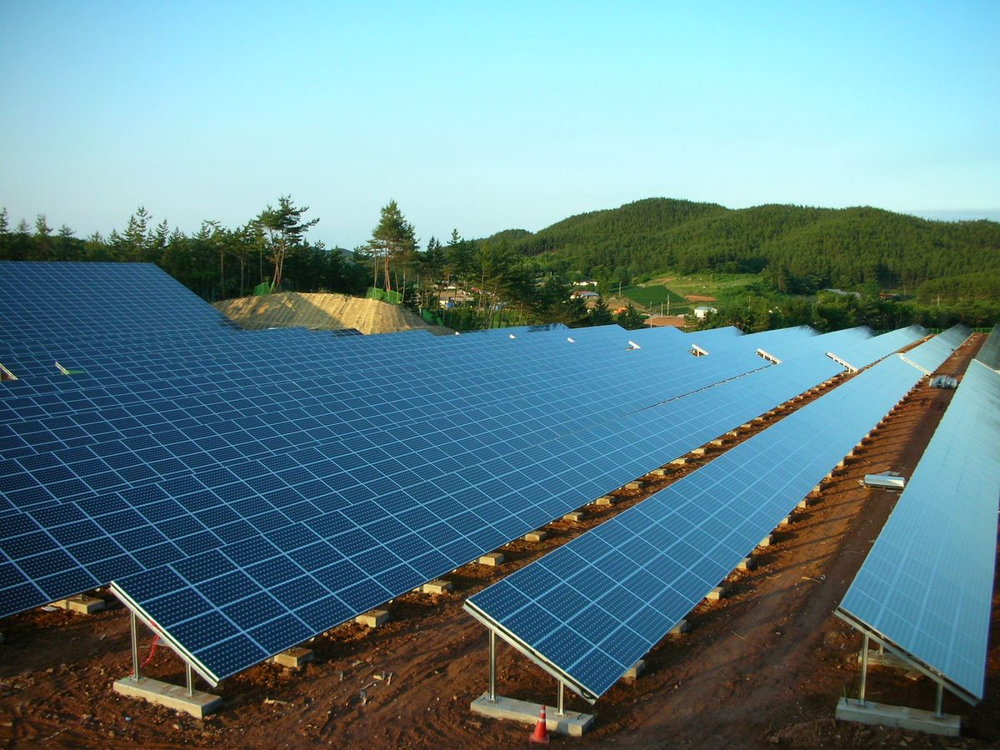

대한태양광발전사업자협회장, 지역별 한계가격제는 사업자에게 책임 전가라고 주장…소매요금 지역 차등 인상을 대안으로

곽영주 회장, 송전망 모자란 지역 도매가 하락은 낮에 발전하는 태양광에 더 큰 타격이라고 주장…자기 돈과 대출로 지은 노후 대비 소규모 사업자 많다며 유예기간·경과조치 갖춘 예측 가능한 정책 요구
곽영주 대한태양광발전사업자협회 회장이 정부가 추진하는 지역별 한계가격제(LMP)는 송전망을 제때 짓지 못한 책임을 발전사업자에게 떠넘기는 제도라고 주장하며, 도매가격을 낮추는 대신 소매 전기요금을 올리면서 지역마다 인상 폭을 달리하자고 제안했다. 곽 회장은 22일 인터뷰에서 LMP가 들어오면 다른 지역으로 보낼 송전망이 모자란 곳의 도매가격이 내려가고, 해가 떠 있는 낮에만 전기를 만드는 태양광은 하루 평균보다 실제 판매 시간대에 더 큰 가격 하락을 겪게 된다고 말했다. 그는 송전망 확충은 정부와 한전 등이 나눠 져야 할 몫이며, 도매가격이 떨어져 한전의 전력구입비가 줄면 오히려 망을 서둘러 지을 유인이 약해질 수 있다고 우려했다. 대안으로는 서울은 100원, 전라도는 30원을 올려 70원의 차이를 두는 식으로 요금을 조정하면 지역 차등과 한전의 재무 부담 완화를 함께 이룰 수 있다는 구상을 내놨다. 곽 회장은 태양광 사업자 대부분이 자기 돈과 금융기관 대출로 사업을 하고 정책자금을 받는 이는 일부이며 노후 연금처럼 쓰려고 투자한 이가 많다면서, 대출금리가 6%를 넘던 때도 있었고 140원대 고정가격계약 낙찰가에 대한 우려도 크다고 전했다. 전국에 10개 지부와 40여 개 지회를 둔 협회를 이끄는 그는 "소규모 사업자들의 주머니를 털어서 기업의 전기요금 부담을 덜어주겠다는 것이냐"고 반문하며, 충분한 유예기간과 경과조치를 갖춘 예측 가능한 정책을 요구했다.
시민에너지 관점
송전망이 늦어진 비용을 누가 질 것인가가 LMP 논의의 핵심인데, 지금 방식대로라면 자리를 옮길 수 없는 기존 소규모 발전소에 그 비용이 먼저 몰릴 수 있다. 지역별 가격 신호가 없으면 발전소와 수요지가 계속 멀어진다는 반론에도 일리가 있지만, 도매가격부터 깎는 방식은 이미 대출을 안고 지은 개인·마을 발전소의 상환 계획을 먼저 흔든다. 거꾸로 도매가격이 낮아지는 지역이야말로 주민과 지역 기업이 가까운 발전소 전기를 싸게 쓰고 수익을 나눌 수 있는 곳이어서, 발전소를 지역 주민이 소유하는 구조라면 낮은 가격은 손실이 아니라 지역의 이익이 될 수 있다. 정부는 기존 소규모 사업자를 위한 경과 보호를 분명히 하고, 남는 전기를 지역 안에서 쓰고 나누는 주민 소유 모델을 LMP 설계와 함께 내놓아야 한다.
출처: 이투뉴스 2026-10-23 정승호 원문 보기
大韓太陽光発電事業者協会長、地域別限界価格制は事業者への責任転嫁と主張…小売料金の地域別引き上げ幅の差を代案に
クァク・ヨンジュ会長、送電網が足りない地域の卸売価格下落は昼間に発電する太陽光への打撃が大きいと主張…自己資金と借入で建てた老後対策の小規模事業者が多いとして、猶予期間・経過措置を備えた予測可能な政策を要求
大韓太陽光発電事業者協会のクァク・ヨンジュ会長は、政府が進める地域別限界価格制（LMP）について、送電網を適時に整備できなかった責任を発電事業者に押しつける制度だと主張し、卸売価格を下げる代わりに小売の電気料金を引き上げ、地域ごとに引き上げ幅を変えるよう提案した。クァク会長は22日のインタビューで、LMPが導入されれば他地域へ送る送電網が足りない所の卸売価格が下がり、日が出ている昼間にしか発電しない太陽光は、1日平均よりも実際に売電する時間帯でより大きな価格下落を受けることになると述べた。送電網の拡充は政府と韓国電力などが分担すべきものであり、卸売価格が下がって韓国電力の電力購入費が減れば、かえって網を急いで整備する誘因が弱まりかねないと懸念した。代案としては、ソウルは100ウォン、全羅道は30ウォン引き上げて70ウォンの差をつけるような形で料金を調整すれば、地域差と韓国電力の財務負担の緩和を同時に実現できるとの構想を示した。クァク会長は、太陽光事業者の大半が自己資金と金融機関からの借入で事業を行い、政策資金を受けるのは一部で、年金のように老後に備えて投資した人が多いとしたうえで、借入金利が6%を超えた時期もあり、140ウォン台の固定価格契約の落札価格への懸念も大きいと伝えた。全国に10の支部と40余りの支会を置く協会を率いる同氏は「小規模事業者の懐を探って企業の電気料金負担を軽くするというのか」と問い返し、十分な猶予期間と経過措置を備えた予測可能な政策を求めた。
市民エネルギーの視点
送電網の遅れによるコストを誰が負うかがLMP論議の核心だが、今のやり方では場所を移せない既存の小規模発電所にそのコストが真っ先に集まりかねない。地域別の価格シグナルがなければ発電所と需要地が離れ続けるという反論にも一理あるが、卸売価格から削る方式は、借入を抱えて建てた個人や集落の発電所の返済計画をまず揺るがす。逆に卸売価格が下がる地域こそ、住民と地域企業が近くの発電所の電気を安く使い、収益を分かち合える場所であり、発電所を地域住民が所有する構造であれば、低い価格は損失ではなく地域の利益になりうる。政府は既存の小規模事業者への経過的な保護を明確にし、余った電気を地域の中で使い分かち合う住民所有モデルをLMPの設計と併せて示すべきだ。
出典: E2News 2026-10-23 Jeong Seung-ho 原文を読む
大韩太阳能发电业者协会会长称分区边际电价制度是把责任转嫁给业者…主张以零售电价分地区差别上调作为替代方案
Kwak Young-ju会长称输电网不足地区批发电价下跌对白天发电的太阳能打击更大…称许多小规模业者靠自有资金和贷款建站养老，要求制定有缓冲期和过渡措施、可预期的政策
大韩太阳能发电业者协会会长Kwak Young-ju表示，政府推进的分区边际电价制度（LMP）是把未能及时建设输电网的责任转嫁给发电业者的制度，他建议不要压低批发电价，而是在上调零售电价的同时按地区设定不同涨幅。Kwak会长在22日的采访中说，一旦引入LMP，向其他地区送电的输电网不足之处批发电价就会下降，而只在白天有太阳时发电的太阳能，在实际售电时段遭受的价格下跌会比全天平均更大。他认为扩充输电网应由政府和韩国电力公社等共同承担，并担心批发电价下降使韩电购电成本减少后，反而会削弱加快建网的动力。作为替代方案，他提出例如首尔上调100韩元、全罗道上调30韩元、形成70韩元差距的调价思路，认为这样既能实现地区差别，也能减轻韩电的财务负担。Kwak会长说，大多数太阳能业者靠自有资金和金融机构贷款经营，获得政策资金的只是一部分，许多人是把它当作养老金来投资的；他还提到贷款利率曾一度超过6%，业者对140韩元区间的固定价格合同中标价也十分担忧。这位领导着在全国设有10个支部和40多个分会的协会的会长反问：“难道要掏小规模业者的腰包来减轻企业的电费负担吗？”并要求制定有充分缓冲期和过渡措施、可预期的政策。
市民能源视角
输电网建设滞后的成本由谁承担，是LMP讨论的核心；按目前的做法，这笔成本可能首先落在无法搬迁的现有小型电站身上。有人反驳说，没有分地区的价格信号，电站与需求地只会越离越远，这有一定道理，但先压低批发电价的方式，首先动摇的是背着贷款建成的个人和村庄电站的还款计划。反过来看，批发电价下降的地区，恰恰是居民和本地企业可以低价使用附近电站电力并分享收益的地方；如果电站由当地居民所有，低电价就不是损失，而可能成为地方的利益。政府应明确对现有小规模业者的过渡保护，并在设计LMP的同时拿出让富余电力在本地使用、由居民共享的居民所有模式。
来源: E2News 2026-10-23 Jeong Seung-ho 查看原文
Head of Korea solar producers' association calls locational marginal pricing a shift of blame onto generators and proposes regionally differentiated retail rate increases instead
Kwak Young-ju argues that falling wholesale prices in grid-constrained areas would hit daytime solar hardest; says many small producers built plants with their own savings and loans for retirement income, and demands predictable policy with grace periods and transitional measures
Kwak Young-ju, president of the Korea Solar Power Producers Association, argued that the locational marginal pricing (LMP) system the government is pursuing shifts the blame for transmission lines not built on time onto generators, and proposed raising retail electricity rates by different amounts in each region instead of lowering wholesale prices. In an interview on the 22nd, Kwak said that under LMP, wholesale prices would fall in areas without enough transmission capacity to send power elsewhere, and that solar, which generates only during daylight, would see a bigger price drop in the hours it actually sells power than the daily average suggests. He said expanding the grid is a burden the government and Korea Electric Power Corporation (KEPCO) should share, and worried that if lower wholesale prices cut KEPCO's power purchase costs, the incentive to build lines quickly could weaken. As an alternative, he suggested adjusting rates so that, for example, Seoul goes up by 100 won and Jeolla by 30 won, a 70-won gap that he said would deliver regional differentiation while easing KEPCO's financial burden. Kwak said most solar producers run their plants on their own money and bank loans, with only some receiving policy funds, and many invested to secure a pension-like income in old age; he added that loan rates had at times exceeded 6% and that producers are deeply worried about fixed-price contract bids in the 140-won range. Leading an association with 10 branches and more than 40 chapters nationwide, he asked whether the aim was "to empty small producers' pockets to ease companies' electricity bills," and called for predictable policy with sufficient grace periods and transitional measures.
Citizen Energy View
Who pays for the delay in building the grid is the core of the LMP debate, and as things stand, that cost could fall first on existing small plants that cannot move. There is something to the counterargument that without locational price signals, generation and demand will keep drifting apart, but cutting wholesale prices first shakes the repayment plans of individual and village plants already built on borrowed money. Conversely, the regions where wholesale prices fall are exactly where residents and local businesses could use power from nearby plants cheaply and share the proceeds, so if local people own the plants, lower prices can become a gain for the region rather than a loss. The government should make transitional protection for existing small producers clear and present, alongside the LMP design, a resident-ownership model that lets surplus power be used and shared within the region.
Source: E2News 2026-10-23 Jeong Seung-ho Read the original